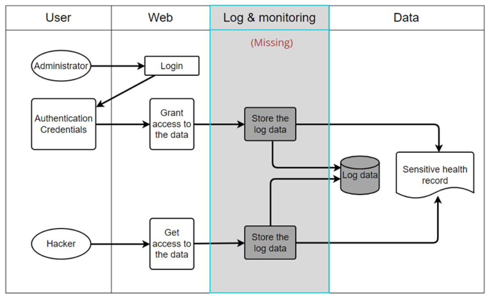

Collaborative Activities
Collaborative presentation during the seminar and the collaborative discussion forums.
Development Team Project - Coding Output
- Watch recording
[Our TeamWork] Final Team Meeting (Essex SSD Code Runthrough) Meeting Recording
- Click to Open
[Our TeamWork] PowerPoint for Final project demonstration
COLLABORATIVE DISCUSSION FORUM
Initial Post
Background
One way to lower the chance of data breaches is to know first whether the data breach is happening. Security logging and monitoring is a topic to detect suspicious logging activity and to identify if breaches are occurring. On the other hand, Security logging and monitoring failures will cause the breaches not able to be detected. ‘Protecting, logging, and monitoring database data should be a core activity of every business.’(Jim H, 2012)
As an example, a children’s health plan provider has been breached and caused a huge amount of sensitive records to be exposed. As the security logging and monitoring failures, the provider failed to detect the breach.
‘A post-incident review found that the website developers had not addressed significant vulnerabilities. …there was no logging or monitoring of the system.’ (OWASP Top 10 team, 2021)
Although this method cannot directly stop the attacker’s action, it is critical to identify the weakness and vulnerabilities. With the log data gathered by the Security logging and monitoring, it helps a corporate to respond to its vulnerabilities and enhance its security system to prevent the same breach.
References
Jim H.(2012) Setting Up a Database Security Logging and Monitoring Program. Available from: http://citeseerx.ist.psu.edu/viewdoc/download?doi=10.1.1.394.3370&rep=rep1&type=pdf [Accessed 22 March 2022].
OWASP Top 10 team (2021) A09:2021 – Security Logging and Monitoring Failures. Available from: https://owasp.org/Top10/A09_2021-Security_Logging_and_Monitoring_Failures/ [Accessed 21 March 2022].
Collaborateive Discussion
Post by Dr. Cathryn Peoples
Hi Hung,
Thanks for your post.
One question I would have here is how has the hacker been able to get access to the data? The missing step in security prior to this is important, even if logging and monitoring is absent once the hacker has gained access to the system.
Best wishes,
Cathryn